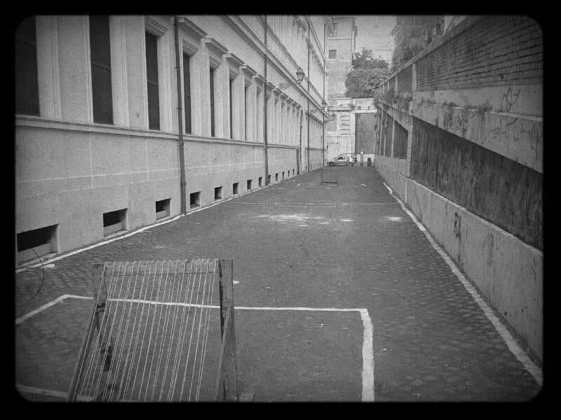
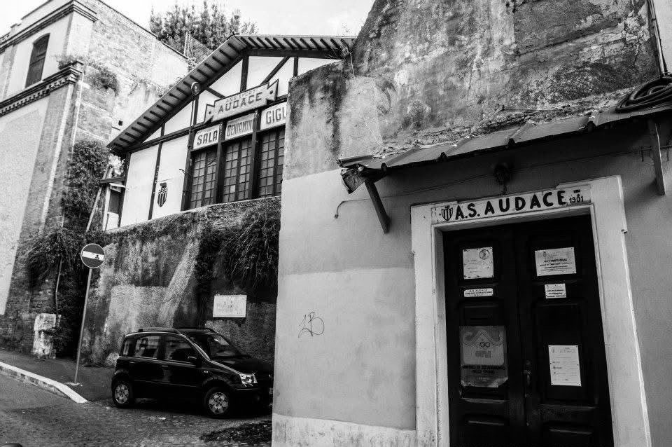

Le notizie del club, in un solo luogo.
Aggiornamenti sportivi, comunicati, iniziative e appuntamenti dell’ACS Audace saranno raccolti nella sezione News.
Vai alle News
Roma · Dal 1901
Una polisportiva storica. Più discipline, una sola identità. Calcio, pugilato e memoria sportiva nel cuore della Capitale.
Dal mondo Audace
Aggiornamenti sportivi, comunicati, iniziative e appuntamenti dell’ACS Audace saranno raccolti nella sezione News.
Vai alle NewsCalendario, risultati e cammino della Prima squadra.
Segui la stagioneStoria, ring, persone e contatti della sezione pugilato.
Scopri il PugilatoACS Audace
L’Audace nasce e cresce come realtà polisportiva romana. Il suo valore non appartiene a una sola squadra o a una sola disciplina: vive nella continuità di un’identità costruita attraverso lo sport.
Conosci l’AudaceUna presenza sportiva romana che attraversa oltre un secolo.
Bianco e rosso, Roma e il nome Audace.
Calcio a 8 e pugilato, con una memoria polisportiva più ampia.

Progetto 1901
Origini, calcio romano, polisportiva, persone, documenti e testimonianze: un archivio digitale dedicato alla memoria del club.
Entra nell’ArchivioInsieme all’Audace
Il progetto ACS Audace cresce con realtà che condividono sport, identità, territorio e visione.
Le discipline di oggi
Il calcio a 8 e il pugilato raccontano due volti contemporanei dell’Audace, uniti dalla stessa storia.
Calcio a 8
La stagione, la rosa e il percorso sportivo dell’Audace nel calcio a 8.

Pugilato
La Sala Gigli, il ring storico e una tradizione che continua nel cuore di Roma.
Entra nel PugilatoACS Audace
Informazioni, collaborazioni, storia, calcio e pugilato.
Contatti